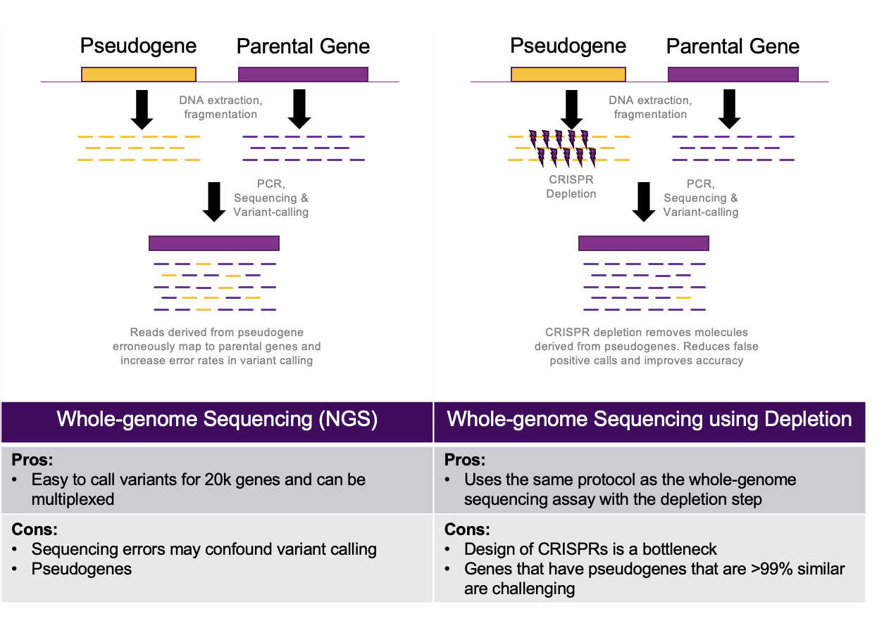

The Diagnostic Blind Spot Hiding in Plain Sight
Pseudogenes are one of the genome's stranger inheritances. They're the remnants of an evolutionary copy-paste error — duplicated stretches of DNA that once resembled a functional gene closely enough to be mistaken for one, before mutation or disuse left them silent. Most of the time they're evolutionary trivia: dead weight the genome carries around, transcriptionally inert, biologically irrelevant. But sequence similarity doesn't care whether a piece of DNA is "real." If a pseudogene is similar enough to its parent gene, a short-read aligner can't reliably tell which one a given read came from — and that ambiguity becomes a diagnostic problem the moment the parent gene is one you're screening newborns for.
The textbook example is Lynch syndrome and the gene PMS2. A region spanning PMS2 exons 12–15 is nearly identical to a pseudogene called PMS2CL. Reads originating from the pseudogene routinely misalign onto the real gene, and vice versa, which means a clinical variant-calling pipeline can either miss a genuine pathogenic variant (buried under pseudogene noise that looks like a disagreeing read) or call a false positive (a pseudogene-derived read masquerading as a variant in the functional gene). Neither failure mode is acceptable in a newborn screening context, where a false positive triggers unnecessary and stressful follow-up testing for a family, and a false negative means a treatable condition goes undetected. Three genes central to newborn screening panels — ABCD1 (adrenoleukodystrophy), GBA1 (Gaucher disease), and CYP21A2 (congenital adrenal hyperplasia) — all have this exact problem: real disease-relevant genes shadowed by pseudogene doppelgängers homologous enough to compromise standard short-read variant calling.
The Scientific Approach: Depleting the Doppelgänger
The instinct of most bioinformatics teams facing a misalignment problem is to fix it downstream — better aligners, better variant callers, statistical models that try to disentangle which reads "really" belong to the gene of interest. We took the opposite approach, for the same underlying reason that shaped the pandemic-preparedness work: if you can physically remove the confounding molecule before sequencing, you don't need a downstream algorithm to guess correctly every time. Partnering with Revvity Omics (formerly PerkinElmer), we set out to build a CRISPR-based depletion assay that selectively removes pseudogene-derived DNA fragments during whole-genome library preparation, before the sample ever reaches the sequencer.
Saying that sentence is easy. Doing it is a genuinely hard molecular design problem, for the same reason the misalignment happens in the first place: the pseudogene and its parent gene are, by definition, extremely similar sequences. A guide RNA that's only "pretty specific" for the pseudogene will inevitably nick the real gene some fraction of the time — which would mean depleting the very signal the assay is supposed to protect. We needed specificity fine enough to resolve differences of a handful of bases between two sequences that are otherwise near-identical across a multi-kilobase region, and we needed it validated computationally before it ever touched a patient sample.

Building the Computational Pipeline
The technical work split cleanly into two problems — designing molecules precise enough to trust, and then proving, computationally, that the trust was earned.
- gRNA design against a moving target. We used CRISflash to identify, filter, and select candidate guide RNA target sites in the regions where pseudogene and parent-gene sequence diverge, scoring each candidate for on-target efficiency and, more importantly, for predicted off-target activity against the parent gene itself. Because a single Cas enzyme's PAM-site requirements and cutting characteristics don't always line up with where the sequence actually diverges, we worked across multiple Cas flavors — Cpf1, Cas12a, Cas13, and SpCas9 — and combined them within a single whole-genome assay, picking whichever enzyme gave the cleanest discriminating cut at each specific locus rather than forcing one enzyme to do a job it wasn't well-suited for.
- Validating specificity before touching a sample. Every candidate guide had to be checked in silico against the reference sequence of both the pseudogene and the parent gene, gene by gene, to confirm the predicted cut sites would enrich for depletion of the decoy without measurably reducing coverage at the functional locus. This is the step that turns "we think this works" into something a clinical lab can stand behind.
- Closing the loop with real variant-calling pipelines. A depletion assay is only useful if it demonstrably improves what a clinical lab's existing GATK-based (or equivalent) variant-calling pipeline actually reports. So the validation wasn't "did we see a peak where we expected" on a coverage plot — it was running full samples through the same variant-calling pipelines used clinically, with and without depletion, and directly comparing the false-positive call rate at each target gene. That paired, before/after design is what makes the ~95% figure credible rather than a back-of-envelope estimate.
- Building for combinatorial complexity. Because different genes needed different Cas enzymes and different guide sets, the assay had to run several distinct CRISPR-RNP chemistries within a single WGS library-prep workflow without them interfering with one another — a combinatorial design constraint that doesn't show up when you're depleting a single, simple target, but becomes the central engineering problem once you're covering three genes with three different escape-artist pseudogenes.
Proof, Partnership, and a Federal Award
Targeting the pseudogenes shadowing ABCD1, GBA1, and CYP21A2, the depletion approach eliminated roughly 95% of the false-positive variant calls that standard WGS produced at those loci. That's not a marginal improvement to an already-working assay — it's the difference between a newborn screening result a clinician can trust at face value and one that requires manual review or orthogonal confirmation before anyone can act on it.
That proof-of-concept data, generated in partnership with Revvity Omics, was the evidence base behind a successful NHGRI SBIR Phase I award (~$450K) to further develop the technology — a useful reminder that in translational genomics, a rigorous before/after comparison on real clinical variant-calling pipelines is often worth more, to a funding reviewer, than an elegant molecular trick with no downstream validation attached.
Where This Goes Next
Three genes is a start, not an endpoint. Pseudogene contamination isn't unique to ABCD1, GBA1, and CYP21A2 — it's a structural feature of the human genome, and current estimates put the number of pseudogene-parent pairs with clinically relevant homology well into the thousands. We're extending this approach toward breast- and colon-cancer screening panels, where a similar class of problem — genes shadowed by highly similar decoys — potentially affects more than 4,000 pseudogene pairs. The molecular design principle stays the same each time: find where the decoy and the real gene actually differ, cut there with the enzyme best suited to that specific difference, and prove it with the same variant-calling pipeline a clinical lab will actually use. What scales is the design process, not any single guide RNA.